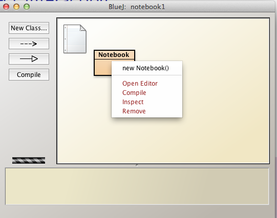
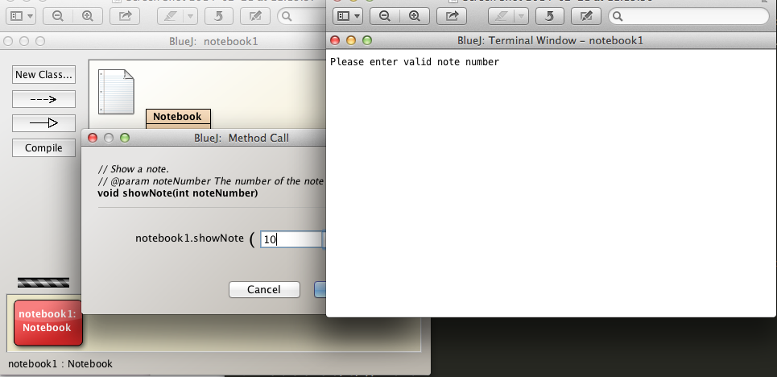
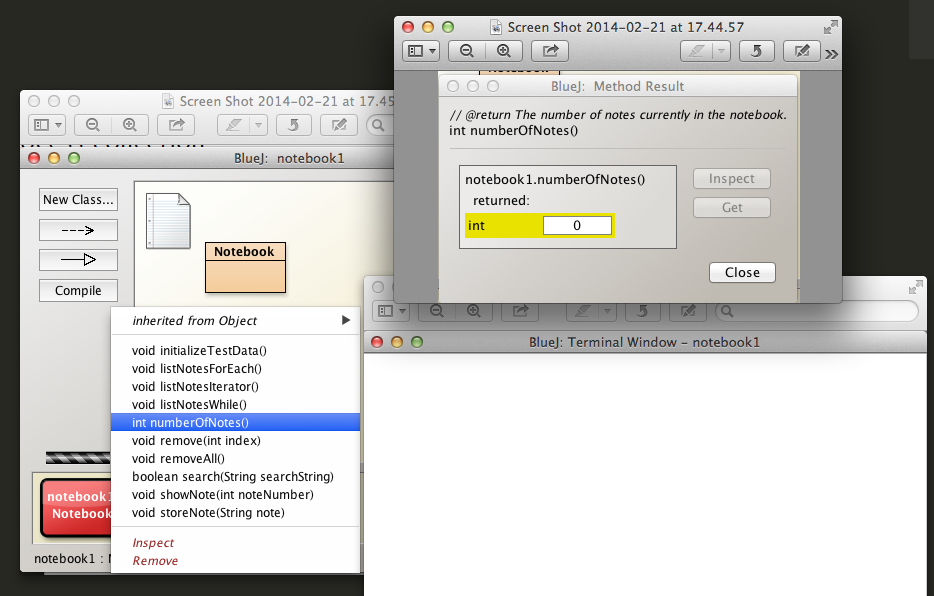

Objectives
Use BlueJ Notebook class to gain basic experience with the ArrayList collection class. Explore some of its methods by generating and manipulating test data. Gain experience in looping using for, enhanced for, while, do-while and iterators.
Notebook project
Download the BlueJ examples chapter04 available here into workspaceBlueJ/blueJ folder and uncompress.
Check your directory structure correct:
workspaceBlueJ/blueJ/chapter04
Launch BlueJ and open the project notebook1
Select Notebook in the BlueJ: notebook1 window, right click and open the editor to view the source code. See Figure 1

Here, without comments, is the code:
public class Notebook
{
private ArrayList<String> notes;
public Notebook()
{
notes = new ArrayList<String>();
}
public void storeNote(String note)
{
notes.add(note);
}
public int numberOfNotes()
{
return notes.size();
}
public void showNote(int noteNumber)
{
if(noteNumber < 0)
{
}
else if(noteNumber < numberOfNotes()) {
System.out.println(notes.get(noteNumber));
}
else
{
}
}
}
In the following steps we shall discuss the key statements in this code
Notebook source code
import java.util.ArrayList;
Makes the ArrayList class available.
The ArrayList class is a member of the Java package java.util.
public class Notebook
{
}
This is the outer wrapper for the Notebook class. It is declared public so that it has global visibility, i.e. there is no restriction on who can use the class.
Declares a private variable notes.
private ArrayList<String> notes;
private means the variable is visible only within the Notebook object in which the variable was created.
ArrayList
public Notebook()
{
}
This is the Notebook default constructor.
The constructor is declared public and is thus globally accessible.
Within the constructor, the notes Array list is instantiated:
public Notebook()
{
notes = new ArrayList<String>();
}
Since Java 7, this may also been written as:
notes = new ArrayList<>();
The public method
public void storeNote(String note)
{
notes.add(note);
}
adds a new note to the notes array.
The new note is made available as an actual parameter (String note) and added to the notes instance variable using the ArrayList method add.
This ArrayList method add is one of three used in the present Notes source code.
The other two are size and get that return the number of elements in an ArrayList and a specific element, respectively.
We can disover the number of notes in the array by invoking the method numberOfNotes
public int numberOfNotes()
{
return notes.size();
}
This method invokes the ArrayList method size which returns the number of elements in the array and this number is in turn returned back to the caller of the method as an integer value by numberOfNotes.
The final method prints a specific note (an element of the notes variable) to the output window:
public void showNote(int noteNumber)
{
if(noteNumber < 0)
{
//Invalid note number: do nothing
}
else if(noteNumber < numberOfNotes())
{
System.out.println(notes.get(noteNumber));
}
else
{
//Invalid note number: do nothing
}
}
We will refactor this method later in the lab.
Adding elements to ArrayList
Create a new Notebook object named notebook1 on the BlueJ workbench.
Select the object and from the drop-down menu invoke storeNote (Figure 1).

Add a note "Lab at 9am".
Check that the note has been saved to the array by invoking showNote using 0 as the actual parameter (Figure 2 and Figure 3).
The note should be displayed as illustrated in Figure 4.
Add the following notes in order:
"Lecture at 10am"
"Break at 11.15am"
"Library at 11.30 till lunch"
"Lunch at 1pm"
Now verify the number of notes saved to date is correct by invoking numberOfNotes (Figure 5 and Figure 6).

Accessing ArrayList element
We shall now refactor the showNote method. Here it is again:
public void showNote(int noteNumber)
{
if(noteNumber < 0)
{
}
else if(noteNumber < numberOfNotes())
{
System.out.println(notes.get(noteNumber));
}
else
{
}
}
Here are the first and third code blocks from the above with added comments:
/*
* The note number cannot be less than zero
*/
if(noteNumber < 0)
{
}
and
/*
* This block routes execution code where the note number is
* neither less than zero nor less than the number of notes.
* In other words, the note number is either equal or greater than the number of notes.
*/
else
{
}
What this long-winded code is attempting to ensure is that only a valid note number is processed.
Since a valid note number range is between zero and the number of notes -1, we can refactor this code as follows:
public void showNote(int noteNumber)
{
if(noteNumber >= 0 && noteNumber < numberOfNotes())
{
System.out.println(notes.get(noteNumber));
}
else
{
System.out.println("Please enter valid note number");
}
}
Open the Notebook source code as before and substitute this refactored method for the existing (Figure 1).

Compile the project and test the method by entering, first valid data (e.g. 0) and then invalid data (e.g. 100).
For example, see Figure 2 where valid data (0) is being input.

See Figure 3 for an outcome of entering an invalid note number.

Initializing ArrayList
Each time we compile the project, all objects are removed from the object bench and any data we might have entered, such as the notes in an earlier step, would be lost.
To avoid the tedious repetition of rentering data following each recompilation,we shall write a simple method to programmatically initialise the notes collection.
Here is the code:
public void initializeTestData()
{
notes = new ArrayList<String>() {{
add("lab at 9am");
add("Lecture at 10am");
add("Break at 11.15am");
add("Library at 11.30 till lunch");
add("Lunch at 1pm");
}};
}
This code is shorhand for
public void initializeTestData()
{
notes = new ArrayList<String>();
notes.add("lab at 9am");
notes.add("Lecture at 10am");
notes.add("Break at 11.15am");
notes.add("Library at 11.30 till lunch");
notes.add("Lunch at 1pm");
}
Now, following recompilation and creation of a new Notebook object, we can invoke this method to restore data in the notes instance variable.
-
Open the source code for Notebook in the editor and insert this method immediately following the constructor.
-
The location for the code is not relevent to the running of the program but placing it following the constructor is a reasonable decision.
-
Compile the code.
-
Create a new Notebook object.
-
Test the initializeTestData method by
- Invoking this newly written method initializeTestData.
- invoking numberOfNotes and verifying the number is 5.
- invoking the showNote method with note numbers from 0 to 4 and verifying the notes are correct.
Access ArrayList using for-each
Here is the general format of the for-each statement:
for(Object o : collection)
{
statement(s)
}
Object o is an element of the collection in question.
For example in the case of ArrayList<String> notes, Object o represents String note where note is an individual element of notes and collection represents notes.
ArrayList<Object> collection Object o
ArrayList<String> notes String note
Here, then, is a method to list all the elements of notes using a for-each loop.
public void listNotesForEach()
{
for(String note: notes)
{
System.out.println(note);
}
}
Our choice of method name, listNotesForEach is made because we will shortly be writing methods to achieve the same goal but using different looping techniques. This approach is being adopted in this, an educational, environment. In a commercial environment one would likely use one looping method and name the method something along the lines of listNotes or listAllNotes without giving any indication of how the method is implemented.
To implement and test this method:
- Open the Notebook editor
- Add this code for listNodesForEach at the end of the Notebook source.
- Compile and execute this new method.
- Invoke the initializeTestData to recreate the sample notes.
You should generate output as shwon in Figure 1.

Access ArrayList using while
Here is the general format of the while statement:
while (expression)
{
statement(s)
}
Here is a method to list all the elements of notes using a while loop.
public void listNotesWhile()
{
int index = 0;
while(index < notes.size())
{
System.out.println(notes.get(index));
index = index + 1;
}
}
To implement and test this method follow steps similar to those for the method listNotesForEach:
- Open the Notebook editor
- Add this code for listNodesWhile at the end of the Notebook source.
- Compile and execute this new method.
- Invoke the initializeTestData to recreate the sample notes.
You should generate output similar to that shown in in Figure 1.

Access ArrayList using Iterator
Here is the general format of the source required to use an iterator over a collection:
ArrayList<Object> collection;
Iterator<Object> it = collection.iterator();
while(it.hasNext())
{
Object o = it.next();
}
Object o is an element of the collection in question.
For example in the case of ArrayList<String> notes, Object o represents String note where note is an individual element of notes and collection represents notes.
ArrayList<Object> collection Object o
ArrayList<String> notes String note
Here is a method to list all the elements of notes by iterating over the collection:
//Insert this statement at the top of the source code file
import java.util.Iterator;
//Here is the method code
public void listNotesIterator()
{
Iterator<String> it = notes.iterator();
while(it.hasNext())
{
System.out.println(it.next());
}
}
To implement and test this method follow steps similar to those for the method listNotesForEach:
- Open the Notebook editor
- Add this code for listNodesIterator at the end of the Notebook source.
- Compile and execute this new method.
- Invoke the initializeTestData to recreate the sample notes.
You should generate output similar to that shown in in Figure 1.

Method to search Notebook object for specific string occurrence
We will name the method search and give it the following header:
public boolean search(String searchString)
The method
- Searches for the first occurrence of the String searchString.
- On the first occurrence of searchString, the method immediately returns true.
- If the string is not found, the method returns false.
Here is the code:
public boolean search(String searchString)
{
Iterator<String> it = notes.iterator();
while (it.hasNext())
{
String string = it.next();
if (string.contains(searchString))
{
return true;
}
}
return false;
}
Observe that we are using the contains method that is a member of the String class: contains, essentially, returns true if and only if the string contains the specified searchString.
For example: - If we search for "Lab" in notes then the method will return true because "Lab" is a substring of the first note "Lab at 9am" - However, a search for "Lab at 9am in 4A" will return false. The entire search string must be contained, not just part of it.
To implement and test this method follow steps similar to those for the method listNotesForEach:
- Open the Notebook editor
- Add this code for searchString at the end of the Notebook source.
- Compile and execute this new method.
- Invoke the initializeTestData to recreate the sample notes.
- Search for the string "Lab" by invoking searchString.
- The boolean true should be returned.
- The outcome should be as illustrated in Figure 1.
You should generate output similar to that shown in in Figure 1.
Remove elements from Notebook ArrayList
Remove individual element
We shall first write a method to remove an individual element from the Notebook field notes followed by a method to remove all the elements.
public void remove(int index)
{
if(index >= 0 && index < notes.size())
{
notes.remove(index);
}
else
{
System.out.println("You requested removal of a non-existant note. Please enter a valid index");
}
}
Initializing the Notebook object with the standard test data, test the method by entering
- A valid index, such as 0.
- Check the number of elements using numberOfNotes.
- List all the elements using, for example, listNotesForEach, and verify correct.
- An invalid index such as 10.
- You should receive a warning message.
- Nevertheless you should: - Check the number of elements using numberOfNotes. - List all the elements using, for example, listNotesForEach, and verify correct.
Remove all elements
public void removeAll()
{
notes.clear();
}
Initializing the Notebook object with the standard test data, test the method by
- Invoke the removeAll method
- Check the number of elements using numberOfNotes which should zero.
- List all the elements using, for example, listNotesForEach, and verify there is none.
You should generate output similar to that shown in in Figure 1.

Exercises
Exercise 1
Write a method listNotesFor to process all the elements in the ArrayList of notes in the Notebook class and print all the notes.
Test the method by:
- Adding the method to Notebook source code.
- Compiling the source.
- Creating a Notebook object.
- Initializing, using method such as initializeTestData, with sample data.
- Invoking listNotesFor and verifying the correctness of the output.
Exercise 2
Write a Notebook method public boolean searchWhile(String searchString) similar in effect to that written earlier in the lab but using a while loop to process the array of notes.
Test the method by:
- Adding the method to Notebook source code.
- Compiling the source.
- Creating a Notebook object.
- Initializing with sample data using a method such as initializeTestData.
- Searching for the presence of a string that exists in the sample data and observing the result.
- Searching for the presence of a string that does not exist in the sample data and observing the result.
Exercise 3
Write a Notebook method public boolean searchForEach(String searchString) similar in effect to that written earlier in the lab but using a for-each loop to process the array of notes.
Test the method by:
- Adding the method to Notebook source code.
- Compiling the source.
- Creating a Notebook object.
- Initializing with sample data using a method such as initializeTestData.
- Searching for the presence of a string that exists in the sample data and observing the result.
- Searching for the presence of a string that does not exist in the sample data and observing the result.